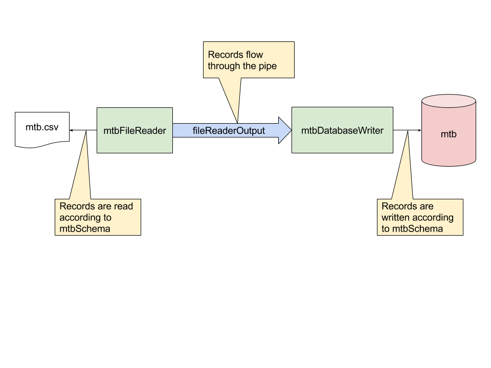

Quick Intro¶
Pneumatic.IO is a fresh approach to ETL and structured IO. It’s a development platform, but little to no programming is required.
Pneumatic is declarative, using either a custom YAML markup, or XML markup based on Spring’s support for extensible markup. I hope in the future there will be a GUI for creating Pneumatic jobs. But for now, the textual forms provide a proof of concept that still makes creating ETL jobs really easy.
As a quick example, here’s how you might read from a file and write its contents to a database.
Next, here are the YAML-based Pneumatic declarations. Generally, the first line of a declaration is the item’s “identifier” (like mtbSchema), optionally followed by a YAML tag indicating the type of the item (!schema means this item is of the schema type). If the item is named according to convention, the type tag may be omitted. For example, because mtbSchema ends in Schema Pneumatic knows it’s a schema.
# Declare a schema that defines our records mtbSchema:
name: Input Schema columns:
- name: name type: string
- name: year type: integer
- name: cost type: decimal
# Declare a pipe to join the file reader and database writer fileReaderOutput: # Declare a file reader to read from mtb.txt mtbFileReader:
name: File Reader fileResource: data/mtb.txt output: fileReaderOutput # reference to fileReaderOutput outputSchema: mtbSchema # reference to mtbSchema# Declare a database writer to read from the pipe and write to the mtb table mtbDatabaseWriter:
name: Database Writer input: fileReaderOutput inputSchema: mtbSchema dataSource: dataSource # Reference the data source declared in Spring XML insertInto: mtb
Visually, the job looks like this:
The schema declaration (mtbSchema) is used to declare the structure of records in the job. A pipe (fileReaderOutput) provides a conduit from one processing element (called “filters”) to another.
A file reader (mtbFileReader) reads a file, creating records according to its schema (outputSchema: mtbSchema) and sending them to the pipe referenced in its output.
A database writer (mtbDatabaseWriter) writes records from the pipe referenced in its input to a table available in the data source: the mtb table referenced in the insertInto property in this case. The data source is specified using the Spring framework:
<jdbc:embedded-database id="dataSource" type="HSQL" />
Declaring these elements provides Pneumatic enough information to read all the records in the file and write them to the database. When there are no more records to process, Pneumatic shuts down. That’s it.